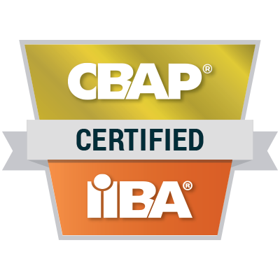
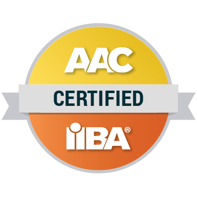
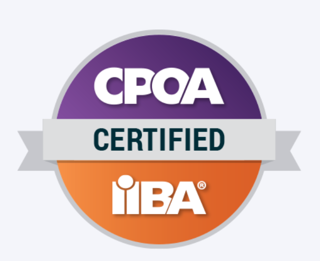
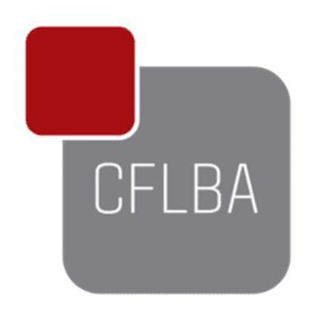
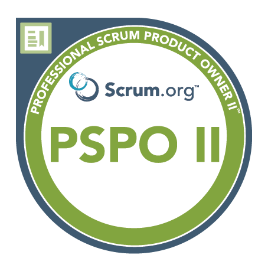
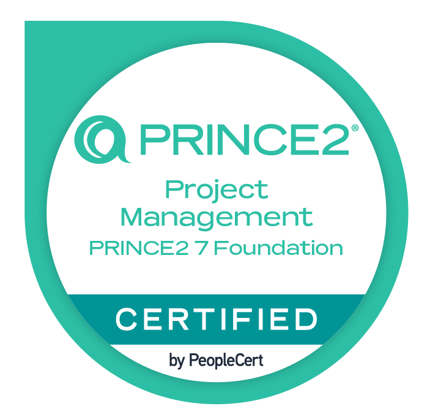
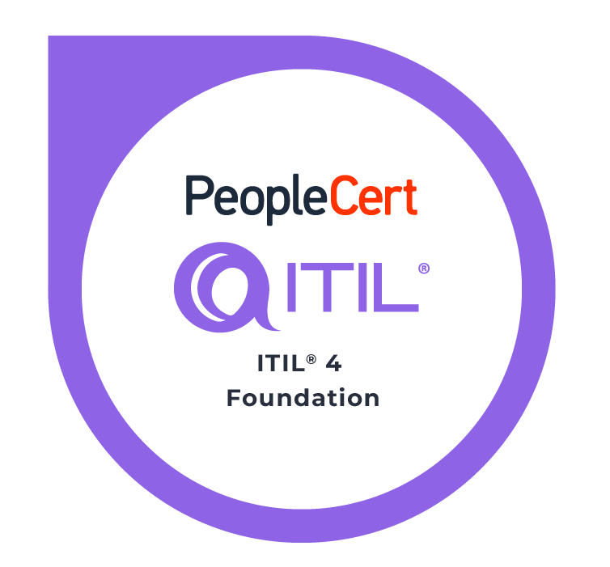

Founding President
IIBA Georgia Chapter—supporting the development and visibility of the business analysis profession in Georgia.
Hello, I am Tinatin—an experienced IT Business Analyst (CBAP®), Project Manager (PRINCE2®) and Product Owner (PSPO II®) with 10+ years of expertise driving business and technical alignment through Agile methodologies.

Recognized as the first Georgian Certified Agile Analysis Professional (AAC®), I am passionate about delivering value-driven digital products and improving business efficiency.
My work combines structured analysis, stakeholder collaboration and practical delivery—helping teams move from uncertainty to well-defined decisions and outcomes. I own the following certifications ➡︎







I contribute to professional communities that help business analysts and product professionals learn, connect and grow.
IIBA Georgia Chapter—supporting the development and visibility of the business analysis profession in Georgia.
Creating spaces for practitioners to exchange knowledge and explore collaborative ways of working.
Business Analysts Community Georgia—knowledge sharing, professional growth and peer connection.
Certification-focused and practical courses for professionals at different career stages.
Explore coursesBusiness analysis, project management and product ownership support for organizations.
Explore consultingFocused one-to-one guidance for career, skills, certifications and professional positioning.
Book a sessionTell me about your project, team or career goal.